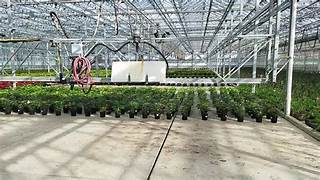
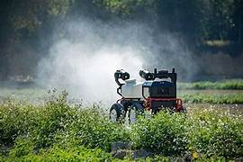

Smart system sprays pesticide only when a plant is diseased
Book a ServiceOur Intelligent Pesticide Sprinkling System is a smart solution designed to help farmers detect diseases in their crops and spray pesticides automatically when needed. Using advanced camera sensors and AI technology, it identifies infected leaves and determines the severity of the infection, ensuring timely action without manual intervention.
The system works in a few simple steps. First, cameras capture images of the plant leaves. These images are analyzed by an AI model to detect diseases and estimate infection levels. Environmental sensors check conditions such as temperature, humidity, and rainfall to ensure spraying is safe and effective. If the infection is significant and conditions are suitable, the spray pump activates automatically for a controlled duration, while all events are recorded on a real-time monitoring dashboard.
This system helps farmers save time and reduce pesticide usage, leading to healthier crops and lower costs. It offers a fully automated solution with minimal manual effort, while providing valuable insights through a dashboard. Our services include installation, regular maintenance, training, and ongoing dashboard access, ensuring that farmers get the maximum benefit from the system.
The system uses AI-powered disease detection and smart spraying to apply pesticides only when needed, saving time and reducing unnecessary chemical use.
By targeting only infected plants and monitoring environmental conditions, it protects crops, improves yield, and lowers overall pesticide costs.
With real-time dashboard monitoring, professional installation, maintenance, and training services, farmers receive a dependable, eco-friendly, and user-friendly solution for smart farming.
Uses AI-powered image analysis to detect plant diseases accurately and estimate infection levels, ensuring precise interventions.
Activates the spray pump only when necessary, based on infection severity and environmental conditions, saving time, resources, and chemicals.
Logs all events and sensor data in an easy-to-use dashboard, providing farmers with insights, alerts, and control over their crops.
"Using this system has saved me so much time and reduced pesticide costs significantly. My crops are healthier than ever!"
“A reliable and innovative solution for smart farming. The AI-based detection and automated spraying are very impressive.”
"The dashboard is easy to use and helps me monitor my plants in real-time. Installation and support were smooth and professional."

